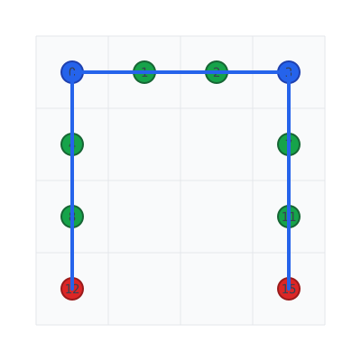
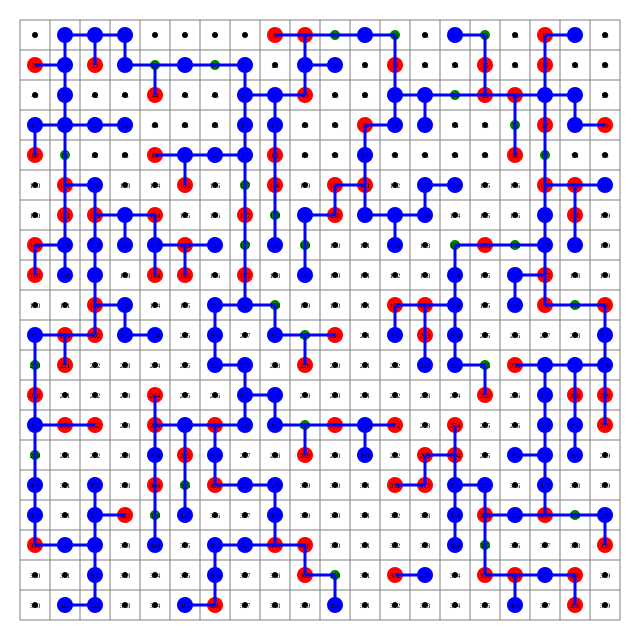

2026
(Time: ~45 minutes)

Example: 4×4 grid with 2 terminal pairs - 🔵
Blue circles: Sources (nodes 0, 3) - 🔴 Red
circles: Terminals (nodes 12, 15)
- 🟢 Green circles: Steiner nodes (1, 2, 4, 7, 8, 11) -
Total cost: 9.0 units
Given an undirected graph G = (V, E) with non-negative edge weights we ≥ 0 and k terminal pairs (si, ti):
Goal: Find minimum-cost subset F ⊆ E such that every pair (si, ti) is connected in (V, F).
graph LR
subgraph "Input Graph"
A[s] --> B
B --> C[t]
D[s] --> E
E --> F[t]
end
subgraph "Steiner Forest"
A1[Source] --> S[* Steiner]
S --> T1[Target]
endNP-Hard and APX-Hard 🎯
| Problem | Description | Example |
|---|---|---|
| Steiner Tree | Connect ALL terminals into ONE tree | Single connected component |
| Steiner Forest | Connect k terminal pairs | Multiple independent trees |
graph TB
subgraph "Steiner Tree (Single Tree)"
S1["s₁"] === T1["t₁"]
S2["s₂"] === T2["t₂"]
S3["s₃"] === T3["t₃"]
end
subgraph "Steiner Forest (Multiple Trees)"
S1a["s₁"] --- T1a["t₁"]
S2a["s₂"] --- T2a["t₂"]
S3a["s₃"] --- T3a["t₃"]
endVariable: xe ∈ {0, 1} for each edge e ∈ E
Let Si = set of subsets S ⊆ V separating terminals si and ti
$$ \begin{aligned} \text{minimize} \quad & \sum_{e \in E} w_e x_e \tag{1} \\ \text{subject to:} \quad & \sum_{e \in \delta(S)} x_e \geq 1, \quad \forall S \in S_i \text{ for some } i \tag{2} \\ & x_e \in \{0, 1\}, \quad \forall e \in E \tag{3} \end{aligned} $$
Constraint (2): Every cut separating a terminal pair must have at least one selected edge ✅
Dual variables: yS ≥ 0 for each cut S
$$ \begin{aligned} \text{maximize} \quad & \sum_{S} y_S \tag{4} \\ \text{subject to:} \quad & \sum_{S: e \in \delta(S)} y_S \leq w_e, \quad \forall e \in E \tag{5} \\ & y_S \geq 0, \quad \exists i : S \in S_i \tag{6} \end{aligned} $$
Primal-Dual Guiding Principle:
xe = 1 ⟹ ∑S : e ∈ δ(S)yS = we
Key Insight: Edge added to solution F only when its dual constraint is tight (critical) 📌
Efficient data structure for tracking connected components with path compression and union by rank.
| Operation | Time Complexity | Description |
|---|---|---|
find(x) |
O(α(n)) | Find root/representative |
union(x, y) |
O(α(n)) | Merge two sets |
α(n) = inverse Ackermann, practically constant
class UnionFind:
"""A Union-Find data structure with path compression and union by rank."""
def __init__(self, size: int):
self.parent = list(range(size))
self.rank = [0] * size
def find(self, idx: int) -> int:
if self.parent[idx] != idx:
self.parent[idx] = self.find(self.parent[idx]) # Path compression
return self.parent[idx]
def union(self, idx1: int, idx2: int) -> bool:
root1, root2 = self.find(idx1), self.find(idx2)
if root1 == root2:
return False
# Union by rank
if self.rank[root1] < self.rank[root2]:
root1, root2 = root2, root1
self.parent[root2] = root1
if self.rank[root1] == self.rank[root2]:
self.rank[root1] += 1
return Truegraph TD
subgraph "Initial State (5 components)"
A0(0) --> A0
B0(1) --> B0
C0(2) --> C0
D0(3) --> D0
E0(4) --> E0
end
subgraph "After union(0,1), union(2,3)"
A1(0) --> B1(1)
C1(2) --> D1(3)
end
subgraph "After union(1,2) - Path Compression"
A2(0) --> B2(1) --> C2(2) --> D2(3)
endThe algorithm uses Union-Find to track connected components during the primal-dual process:
| Iteration | Components | Action |
|---|---|---|
| 0 | {0}, {1}, {2}, {3}, … | Each terminal separate |
| 1 | {0,1}, {2}, {3}, … | Edge (0,1) added |
| 2 | {0,1,2}, {3}, … | Edge (1,2) added |
| … | … | Continue until all connected |
Key Insight: Union-Find enables O(α(n)) component queries - essential for efficient algorithm! 📌
Key optimizations: - Path compression: Flatten tree during find - Union by rank: Attach smaller tree to larger
The Primal-Dual Steiner Forest (PD-SF) algorithm by Agrawal, Klein, and Ravi (1995)
flowchart LR
A["1. Init: y=0, F={}"] --> B{"2. While ∃ unconnected pairs"}
B -->|"Yes"| C["Identify Active Components"]
C --> D["Increase y_C uniformly"]
D --> E{"Edge becomes tight?"}
E -->|"Yes"| F["Add e to F"]
F --> G["Update Components"]
G --> B
B -->|"No"| H["3. Reverse Delete"]
H --> I["Return Forest F'"]A component C is active if it contains at least one terminal that needs to connect to a terminal in a different component.
# Compute active components
for root, terms in comp_terms.items():
is_active = False
for terminal in terms:
for partner in pair_dict[terminal]:
if term_root[partner] != root:
is_active = True
break
if is_active:
active_comps.add(root)Increase all active components’ dual variables uniformly until an edge becomes tight:
$$ \Delta_e = \frac{c_e - \text{paid}(e)}{\text{num\_active}(e)} $$
# Find minimum delta
min_delta = min(Δ_e for all crossing edges)
paid[e] += min_delta * num_active(e)When an edge becomes tight (paid = cost), add it to the forest:
if paid[edge] >= cost:
F.append((u, v, cost))
uf.union(u, v) # Merge componentsphysdes-py implementation on h × w grid:
graph TD
subgraph "Grid Graph (h×w)"
N00(0,0) --- N01(0,1) --- N02(0,2)
N00 --- N10(1,0) --- N11(1,1)
N01 --- N11 --- N12(1,2)
N10 --- N11 --- N20(2,0)
endfor row in range(height):
for col in range(width):
node = row * width + col
if col + 1 < width:
edges.append((node, node + 1, 1.0)) # Horizontal
if row + 1 < height:
edges.append((node, node + width, 1.0)) # VerticalAfter all pairs connected, remove redundant edges in reverse order of addition:
F_pruned = F[:]
for idx in range(len(F) - 1, -1, -1):
temp_uf = UnionFind(n)
for jdx in range(len(F)):
if jdx != idx:
temp_uf.union(F[jdx][0], F[jdx][1])
# Check if all pairs still connected
if all(temp_uf.find(s) == temp_uf.find(t) for s, t in pairs):
del F_pruned[idx] # Safe to removeIf edge e created a cycle, removing e doesn’t disconnect any terminal pair. The last-added edge in any cycle is always redundant!

From
src/physdes/steiner_forest/steiner_forest_grid.py:
class UnionFind:
"""
A Union-Find data structure with path compression and union by rank.
Commonly used in graph algorithms like Kruskal's MST.
"""
def __init__(self, size: int):
self.parent: List[int] = list(range(size))
self.rank: List[int] = [0] * size
def find(self, idx: int) -> int:
if self.parent[idx] != idx:
self.parent[idx] = self.find(self.parent[idx])
return self.parent[idx]
def union(self, idx1: int, idx2: int) -> bool:
root1, root2 = self.find(idx1), self.find(idx2)
if root1 == root2:
return False
if self.rank[root1] < self.rank[root2]:
root1, root2 = root2, root1
self.parent[root2] = root1
if self.rank[root1] == self.rank[root2]:
self.rank[root1] += 1
return Truedef steiner_forest_grid(
height: int,
width: int,
pairs: List[Tuple[Tuple[int, int], Tuple[int, int]]]
) -> Tuple[List[Tuple[int, int, float]], float, Set[int], Set[int], Set[int]]:
"""
Computes an approximate Steiner forest on a grid graph.
The algorithm is based on the primal-dual approach for the Steiner
network problem. It iteratively pays for edges until all terminal
pairs are connected.
"""
n = height * width
uf = UnionFind(n)
# Build source/terminal sets
sources, terminals = set(), set()
pair_dict = defaultdict(list)
for (sx, sy), (tx, ty) in pairs:
source_idx = sx * width + sy
target_idx = tx * width + ty
sources.add(source_idx)
terminals.add(target_idx)
pair_dict[source_idx].append(target_idx)
pair_dict[target_idx].append(source_idx)paid = defaultdict(float)
F = []
while True:
# Check if all pairs connected
term_root = {t: uf.find(t) for t in all_terminals}
if all(term_root[s] == term_root[t] for s, ts in pair_dict.items() for t in ts):
break # Feasible solution found
# Find active components and minimum delta
min_delta = float('inf')
for u, v, cost in edges:
if uf.find(u) == uf.find(v):
continue
num_active = (uf.find(u) in active_comps) + (uf.find(v) in active_comps)
if num_active == 0:
continue
delta = (cost - paid[(u, v)]) / num_active
min_delta = min(min_delta, delta)
# Update payments and add edges
for u, v, cost in edges:
if uf.find(u) != uf.find(v):
paid[(u, v)] += min_delta * num_active
if paid[(u, v)] >= cost:
F.append((u, v, cost))
uf.union(u, v)def steiner_forest_grid(
height: int,
width: int,
pairs: List[Tuple[Tuple[int, int], Tuple[int, int]]]
) -> Tuple[
List[Tuple[int, int, float]], # F_pruned: edges in forest
float, # total_cost
Set[int], # sources
Set[int], # terminals
Set[int] # steiner_nodes (non-terminal nodes in forest)
]:| Return | Description |
|---|---|
F_pruned |
List of edges (u, v, cost) in final forest |
total_cost |
Sum of all edge costs |
sources |
Set of source node indices |
terminals |
Set of terminal node indices |
steiner_nodes |
Non-terminal nodes used in forest |
>>> h, w = 2, 2
>>> pairs = [((0, 0), (1, 1))]
>>> F_pruned, cost, sources, terminals, steiners = steiner_forest_grid(h, w, pairs)
>>> sorted(F_pruned)
[(0, 1, 1.0), (1, 3, 1.0)]
>>> cost
2.0
>>> sources, terminals, steiners
({0}, {3}, {1})Visual:
Grid (2×2) Steiner Forest
.---.---. o---*---o
| S | | ==> | |
'---'---' '---'---'
| | T | | * |
'---'---' '---'---o
S TTheorem (Agrawal, Klein, Ravi, 1995): The PD-SF algorithm returns a feasible Steiner forest F′ with
c(F′) ≤ 2 ⋅ OPT
Lemma: For any iteration t, with active components At:
∑C ∈ At|F′ ∩ δ(C)| ≤ 2|At|
graph TD
subgraph "Forest Property"
C1(C₁) --- C2(C₂)
C2 --- C3(C₃)
end
Degree[C₁]=1, Degree[C₂]=2, Degree[C₃]=1
Sum=4 ≤ 2×3=6 ✓By induction over iterations:
c(F′) = ∑tΔt ⋅ ∑C ∈ At|F′ ∩ δ(C)|
≤ ∑tΔt ⋅ 2|At| = 2∑tΔt|At|
= 2∑SyS ≤ 2 ⋅ OPT
Q.E.D. 🎉
From the physdes-py test suite on SteinForestLib:
| Metric | PD-SF | Greedy | Randomized | |
|---|---|---|---|---|
| Theoretical Ratio | 2 | Ω(log n) | O(log n) | |
| Worst Observed | 1.269 | 1.115 | 7.086 | |
| Runtime | Fastest | Moderate | Slow |
>>> h, w = 8, 8
>>> pairs = [((0, 0), (3, 2)), ((0, 0), (0, 5)), ...]
>>> F, cost, sources, terminals, steiners = steiner_forest_grid(h, w, pairs)
>>> cost
17.0 # Observed vs OPT ≈ 15-17Total cost: 233.0
Sources: 150 unique sources
Terminals: 150 unique terminals
Steiner nodes: 27 inserted| Aspect | PD-SF |
|---|---|
| Approximation Ratio | 2 (tight) |
| Time Complexity | O(mn) |
| Space Complexity | O(n + m) |
| Key Innovation | Primal-Dual + Reverse Delete |
Questions?
# Run the example!
if __name__ == "__main__":
from physdes.steiner_forest.steiner_forest_grid import steiner_forest_grid
h, w = 20, 20
pairs = [((i, j), (h-i-1, w-j-1)) for i in range(10) for j in range(15)]
F, cost, sources, terminals, steiners = steiner_forest_grid(h, w, pairs)
print(f"Cost: {cost}, Steiner nodes: {len(steiners)}")